A canvas, with room to breathe.
Floating islands is the sole live design. The current controls and import/export layout study appear first; earlier screenshots archive the directions and backgrounds considered before approval. GIF animation frames differ between screenshots.
Current: consistent editing glass and compact file controls
Palette and Style surfaces now paint the same card material once. Palette/Style triggers are icon-only. Import then Export share a top-right capsule; Clear all is separate on desktop and inside More on phones. Image-action capsules remain opaque, and the destructive text row in More uses opaque GlassKit error colors.
Compare the interactive top, bottom and vertical file-action mockups with light/dark and sample panels.
Archived: first protected image actions
At this earlier step, the shared image-action capsule is fully opaque, using the theme surface and main ink. Editing islands, captions and dialogs retain default GlassKit materials. These original white/black images verify contrast over artwork.
Archived GlassKit default-material comparison
Floating islands with unmodified GlassKit 1.22.2 glass material tokens and Bitify geometry. Card surfaces are white at 10% in dark mode and 60% in light mode; blur, borders and shadows follow library defaults. Hover fills remain translucent. The themed checker is retained.
Readability challenge: pale artwork
Default white dark-mode image actions disappear over a white original, including the focused Remove icon. Caption labels stay on the checker and remain legible. This archived baseline motivated the now-approved opaque image-action capsule shown above.
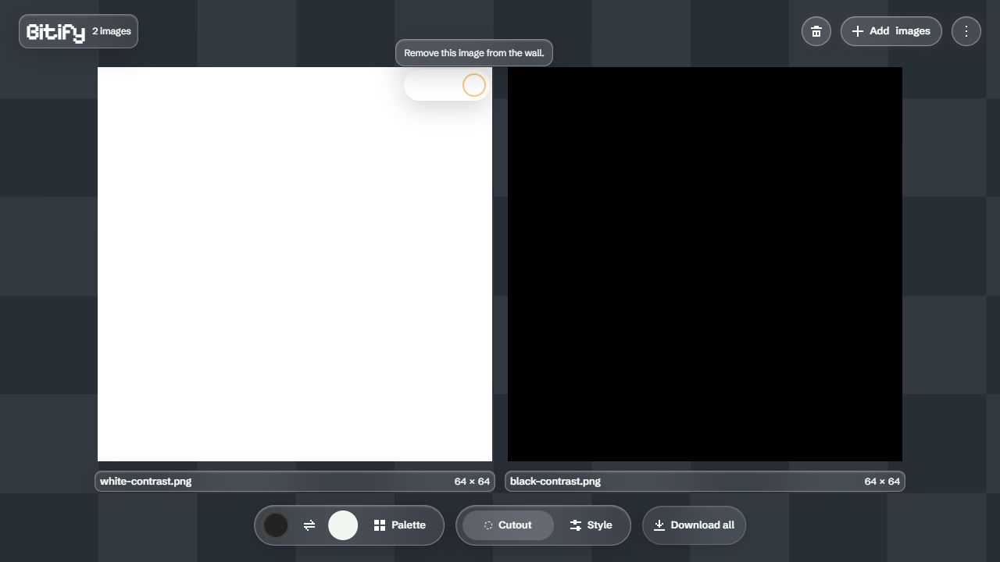
Archived 94% theme-consistency experiment
Dark canvas restored to the original dark shades; light canvas uses subdued gray. Captions, controls and popovers share one 94% themed surface tint. These supersede the shared middle-gray experiment below.
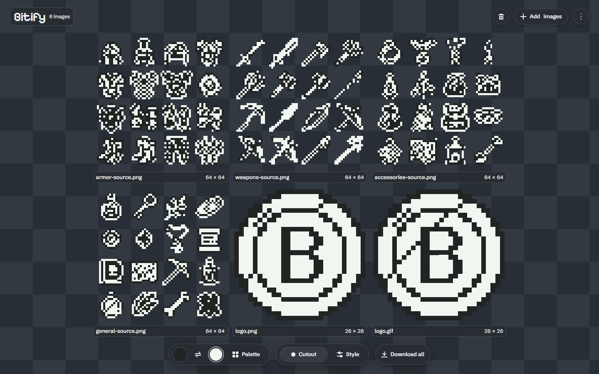
94% dark theme: dark canvas and matching glass controls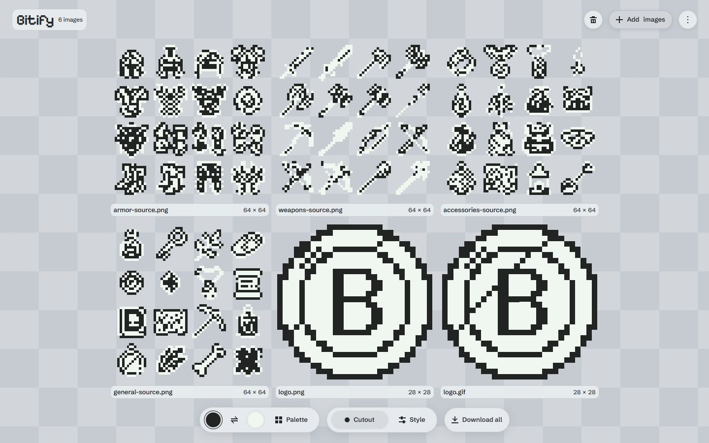
94% light theme: subdued gray canvas and matching glass controlsArchived initial adoption
One shared middle-gray checker, transparent image surfaces, protected labels and action states. The phone screenshot uses simulated no-hover and reduced-transparency production rules; it is not a physical iOS capture.
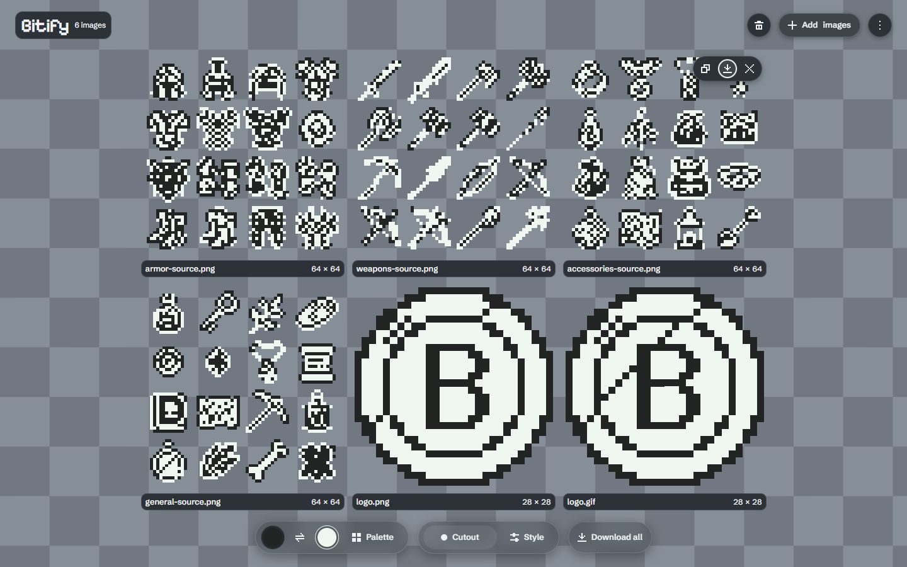
Earlier desktop: checker canvas and readable floating controls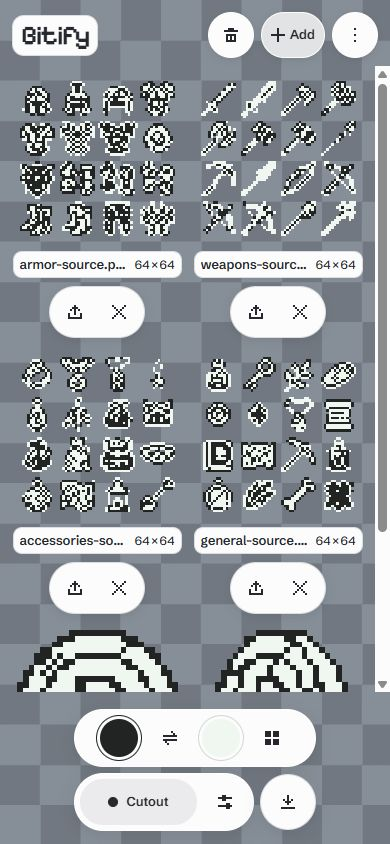
Simulated no-hover / reduced transparency: stacked labels and44px actionsArchived readability exploration
Stronger image labels and actions retain the floating composition. Hover and keyboard focus strengthen contrast. Every pattern follows 16 source pixels at the typical image scale. Neutral and local-checker image backing are optional alternatives.
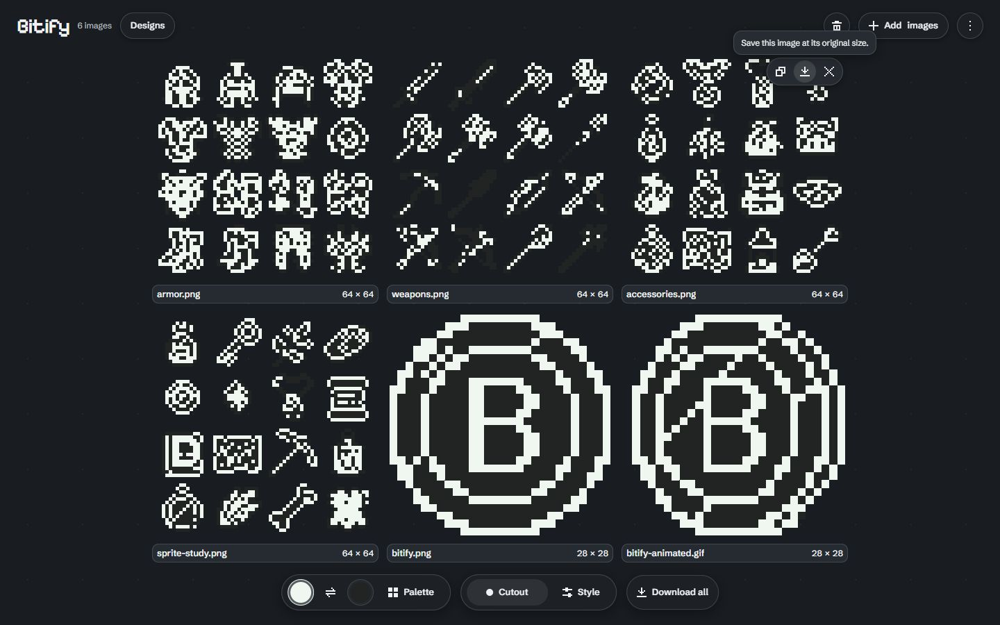
Floating islands: stronger labels and hovered actions, dark dots
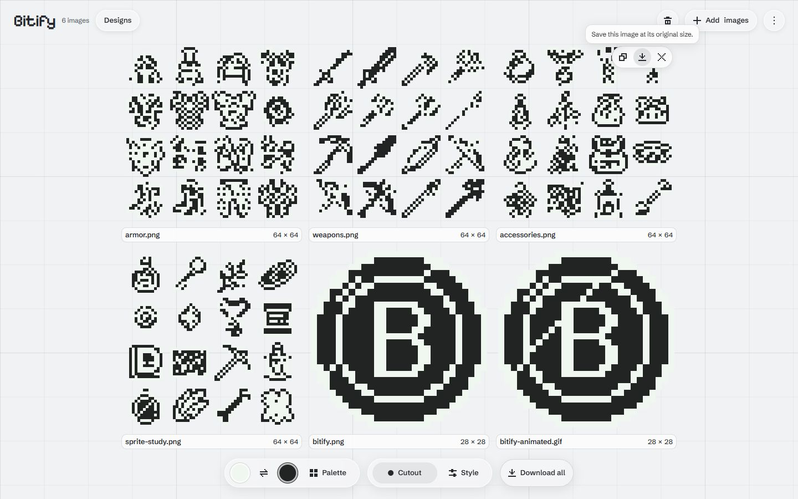
Floating islands: stronger labels and hovered actions, light lines
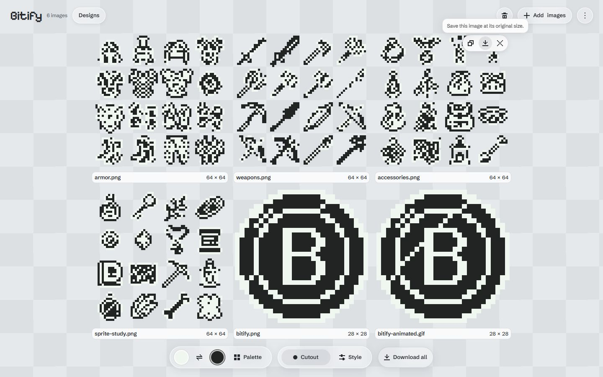
Full-window checkerboard in the grid selector
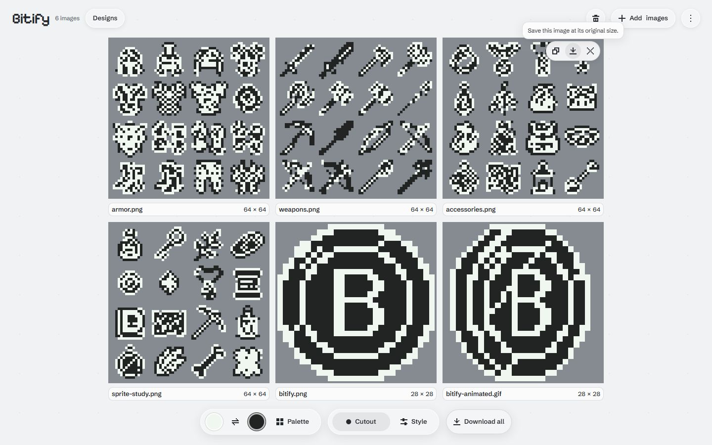
Optional neutral image backing with a continuous dot canvas
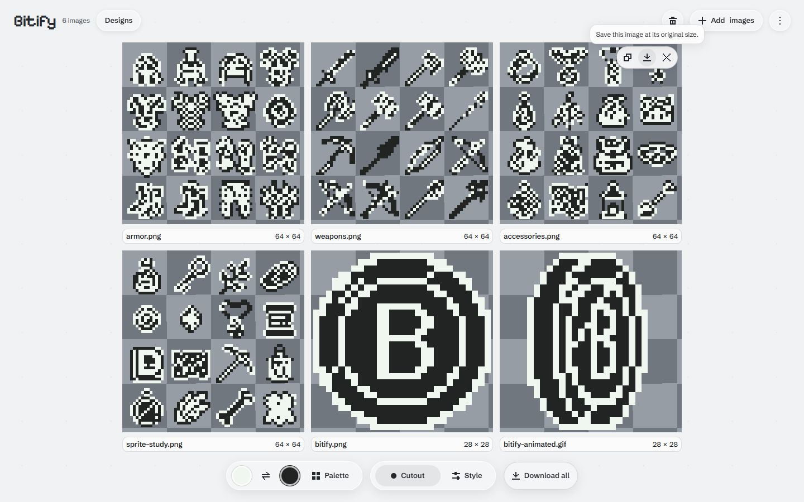
Optional local checkerboard for inspecting transparency
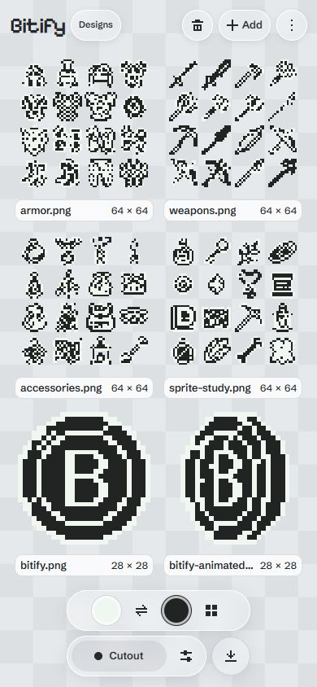
Phone dimensions: readable labels over a full-window checkerboard
Earlier composition exploration
The contact sheet and screenshots below preserve earlier prototypes. Use the adopted screenshots at the top and the live preview for the current design.
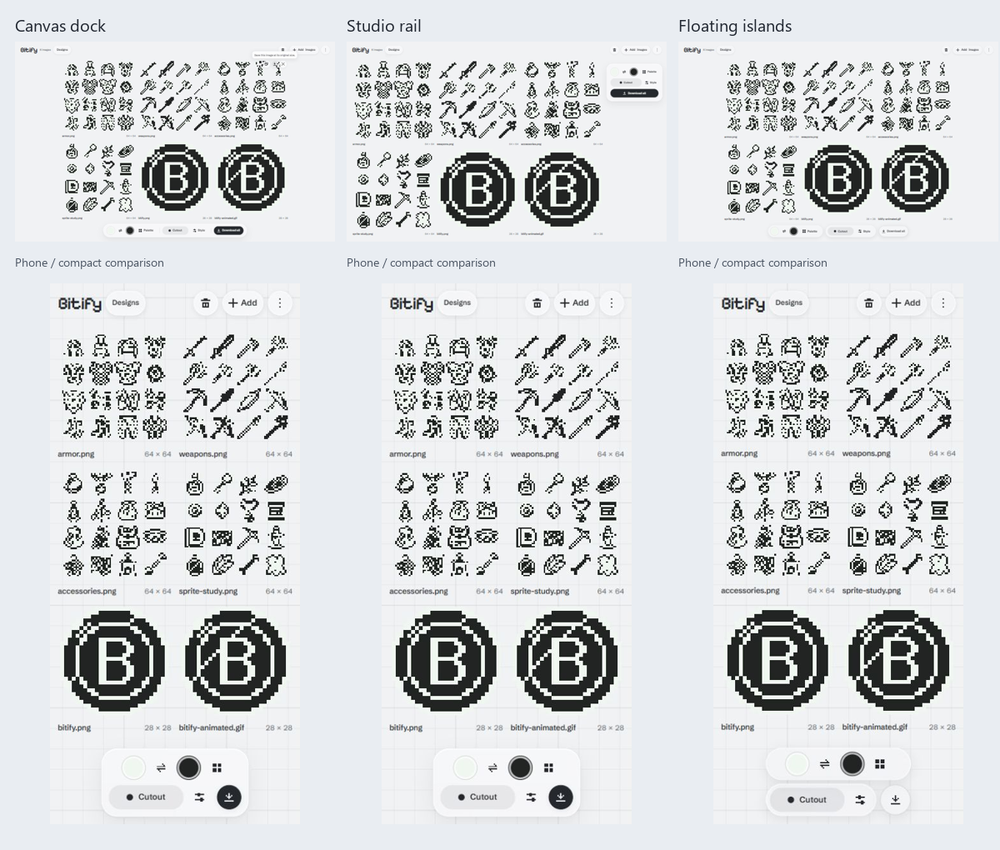
Recommended: a continuous quiet grid, plain images, fewer grouped glass surfaces, and an unobscured image viewport. A browser mockup does not establish real iOS Safari GPU performance or touch behavior.